It is the most commonly used material in the house construction.
Ever since man felt the necessity of a house, mud is widely used. Its main features are as follows.
*Abundantly available natural material.
*Cost is cheap.
*Easily made and repaired.
*Sufficiently lasting.
*Maintain equitable temperature both in winter and summer.
*Highly useful for low-income people.
*The use of mud mixed with chopped straw and cow dung helps for coating the inner and outer walls of the house. A thin coating of mud and cement maintain the surface in a good condition.
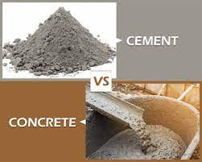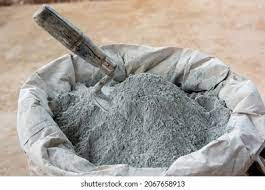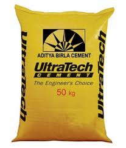Stone is a natural material of construction and is obtained from quarries. Since prehistoric days, it has been used for
*Constructing different components of buildings like foundation, walls, lintels, floors, roofs etc.
*The stones used for foundation and walls should be sound and free from cracks and decay.
*Stones of different forms such as granite, marble, slate, sandstone and limestone are commonly used as building materials.
*Waxing and polishing make them more attractive.
*Gravel which are stones not larger than 2 cms is essentially needed for building. Care should be taken in using proper sizes of stones and correct inter locking in the width of walls..
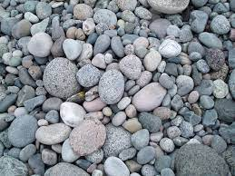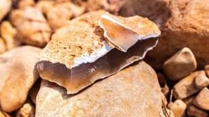It consists of small grains of silica and is formed by the disintegration of rocks caused by weather. Sand should have the following qualities.
*It is hard, durable, clean, free from organic matter and does not contain appreciable amount of clay.
It should not contain harmful impurities such as iron pyrites, salts, Coal, mica, alkaline or other materials, which will affect hardening.
*This should be coarse, clean, hard, strong, uncoated and free from clay, dust, mica and soft flanky particles such as of shell.
*Sand required for mortar for brick – work needs to be sieved through a 3/8 in. Mesh sieve.
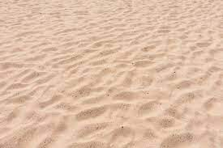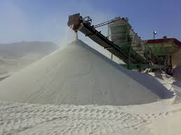The most extensively used construction material because it is locally available, cheap, strong, and durable and it ohas the good insulating property against heat and sound. It can be moulded to any shape or size. The standard size of bricks is 9” X 4 ½ “ X 3“, though the size varies according to local practice in India..
The characteristics of a good brick are that
*It should be so hard that it should not be possible to make a scratch on the surface with the finger nail,
*It should give a ringing sound when struck.
*It should be heavy, and if allowed it should not absorb water more than ½ of its own weight.
*If kept immersed for two hours in water..
*It should be free from any lumps and the most important test is that, if 5 or 6 bricks, selected at random, be kept immersed in water overnight, none of them should show a crack and a tendency to fall to pieces
*If this happens, it may be assumed that the brick contains particles of lime kunker in its clay, which have been converted into quick – lime by burning. These bricks are unsuitable for work.
*Colour of bricks is no test, because, it depends upon the nature and constituents of the clay and the fuel used for burning.
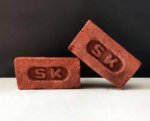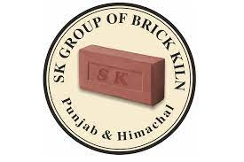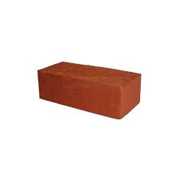Cement should be used for the purpose of durability and strength of buildings.
*It has the quality to bind together loose particles of gravel, broken stones or other aggregates.
*Its quick setting property, strength and ease with which it can be used under variety of conditions has revolutionized the concept of construction.
*Hence it has become the most popular cementing material..
*Concrete is a building material made by mixing cement, sand, gravel land water, which becomes rock hard, when dry and set.
*It is fire proof, sturdy and can withstand high pressure.
*Because of these qualities, almost all huge structures are molded by concrete.
Tiles used for construction are of different types such as flooring tiles, country tiles and marble tiles.
*The Country tiles and Mangalore tiles are generally used for roofing in rural areas.
*Floor tiles consists of terrazzo, which are polished tiles made out of marble chips mixed with coloured sand..
* Mosaic tiles are cement tiles polished with a portable machine after laying. Though they are expensive, they are easy to maintain.
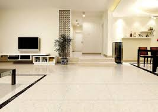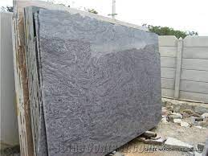